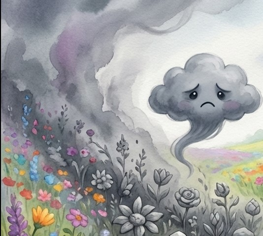
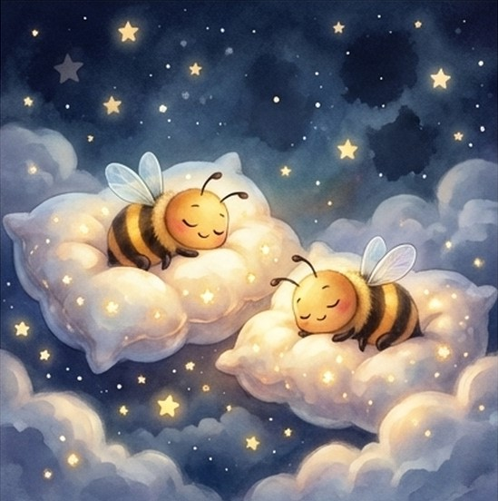

Пригоди, що розкривають головну ідею
Таємниця сірого туману
Конфлікт: Смуток (Демон НаноПут).
Моральний Урок: Навіть найменша радість перемагає найбільший смуток.
Читати історію
Місто Солодких Мрій

Конфлікт: Егоїзм (Тінь Сум краде мрії).
Моральний Урок: Щастям не можна володіти, ним можна лише ділитися.
Читати історію
Таємниця Зниклих Зірок
Конфлікт: Неусвідомлена шкода (Сонні Жучки).
Моральний Урок: Твої мрії та дії впливають на інших.
Читати історію
Всесвіт, що постійно розширюється
Матеріал містить десятки розроблених, але ще не реалізованих ідей:
• Місто Заводних Сердець: Боротьба з рутиною.
• Дзеркальне Озеро: Боротьба з внутрішніми страхами.